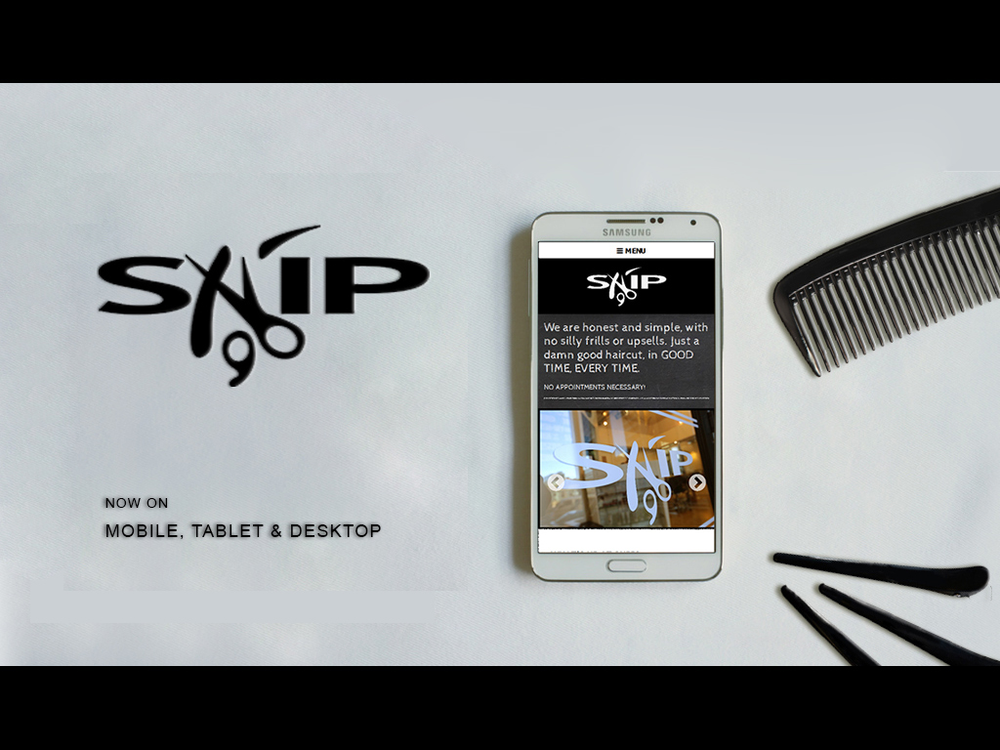
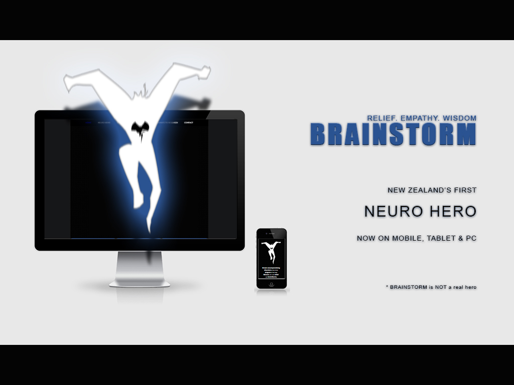

I'm a customer-focused web developer / designer. I create digital experiences, blending together aesthetic appeal, user interactions and technology.
Notable Projects

2014 - SNIP Hair Salon: Initially mocked up using HTML5, JavaScript and SASS, the SNIP website was later constructed into a dynamic website, using PHP and SQL. The final product was fully responsive, and available on mobile, tablet and desktop.
2014 - Kiwi Transport Services: The kiwi is a difficult bird to work with; in New Zealand, it is a reoccurring and widespread symbol. It's no wonder then, that I had much difficultly designing something interesting, unique and masculine. The final product, a logo, suggests a simple and elegant but masculine design.

2014 - BrainStorm: For a tech and concept demo, I designed a mascot and developed a responsive website for a fictional charity. The website was built to explore the use of technology as a novel means for fund-raising.